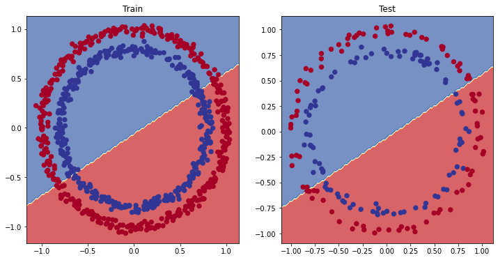
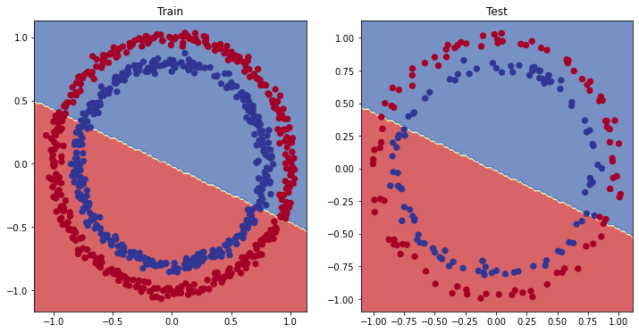
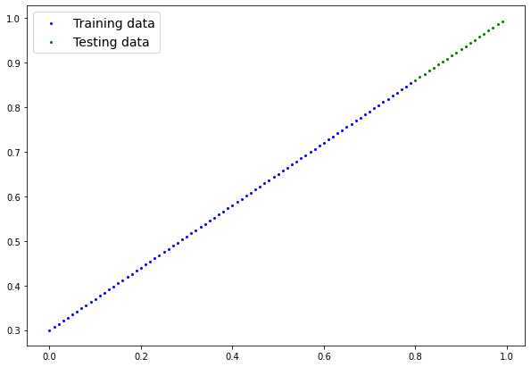
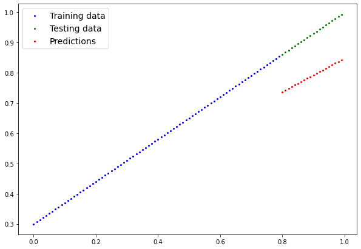
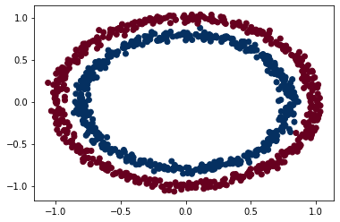
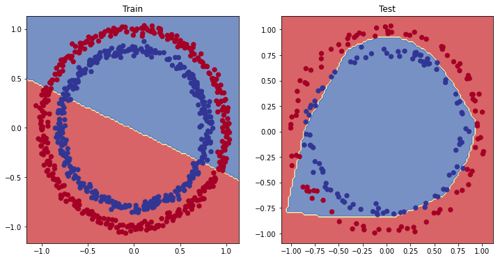
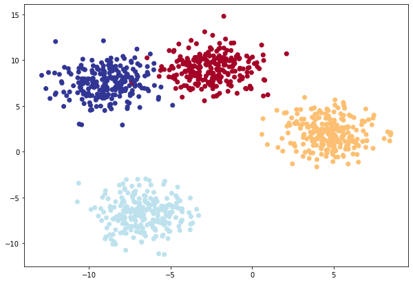
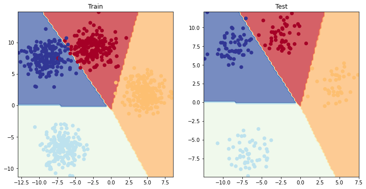

from sklearn.datasets import make_circles
# Make 1000 samples
n_samples = 1000
# Create circles
X, y = make_circles(n_samples,
noise=0.03, # a little bit of noise to the dots
random_state=42) # keep random state so we get the same values4 02 - PyTorch 신경망 분류

4.1 What is a classification problem?
A classification problem involves predicting whether something is one thing or another.
For example, you might want to:
| Problem type | What is it? | Example |
|---|---|---|
| Binary classification | Target can be one of two options, e.g. yes or no | Predict whether or not someone has heart disease based on their health parameters. |
| Multi-class classification | Target can be one of more than two options | Decide whether a photo of is of food, a person or a dog. |
| Multi-label classification | Target can be assigned more than one option | Predict what categories should be assigned to a Wikipedia article (e.g. mathematics, science & philosohpy). |

Classification, along with regression (predicting a number, covered in notebook 01) is one of the most common types of machine learning problems.
In this notebook, we’re going to work through a couple of different classification problems with PyTorch.
In other words, taking a set of inputs and predicting what class those set of inputs belong to.
4.2 이번 장에서 다룰 내용
In this notebook we’re going to reiterate over the PyTorch workflow we coverd in notebook 01.

Except instead of trying to predict a straight line (predicting a number, also called a regression problem), we’ll be working on a classification problem.
Specifically, we’re going to cover:
| Topic | Contents |
|---|---|
| 0. Architecture of a classification neural network | Neural networks can come in almost any shape or size, but they typically follow a similar floor plan. |
| 1. Getting binary classification data ready | Data can be almost anything but to get started we’re going to create a simple binary classification dataset. |
| 2. Building a PyTorch classification model | Here we’ll create a model to learn patterns in the data, we’ll also choose a loss function, optimizer and build a training loop specific to classification. |
| 3. 데이터에 모델 맞추기 (훈련) | We’ve got data and a model, now let’s let the model (try to) find patterns in the (training) data. |
| 4. 예측 및 모델 평가 (추론) | Our model’s found patterns in the data, let’s compare its findings to the actual (testing) data. |
| 5. Improving a model (from a model perspective) | We’ve trained an evaluated a model but it’s not working, let’s try a few things to improve it. |
| 6. Non-linearity | So far our model has only had the ability to model straight lines, what about non-linear (non-straight) lines? |
| 7. Replicating non-linear functions | We used non-linear functions to help model non-linear data, but what do these look like? |
| 8. 전체 과정 합치기 with multi-class classification | Let’s put everything we’ve done so far for binary classification together with a multi-class classification problem. |
4.3 도움을 받을 수 있는 곳
All of the materials for this course live on GitHub.
And if you run into trouble, you can ask a question on the Discussions page there too.
There’s also the PyTorch developer forums, a very helpful place for all things PyTorch.
4.4 0. Architecture of a classification neural network
Before we get into writing code, let’s look at the general architecture of a classification neural network.
| Hyperparameter | Binary Classification | Multiclass classification |
|---|---|---|
Input layer shape (in_features) |
Same as number of features (e.g. 5 for age, sex, height, weight, smoking status in heart disease prediction) | Same as binary classification |
| Hidden layer(s) | Problem specific, minimum = 1, maximum = unlimited | Same as binary classification |
| Neurons per hidden layer | Problem specific, generally 10 to 512 | Same as binary classification |
Output layer shape (out_features) |
1 (one class or the other) | 1 per class (e.g. 3 for food, person or dog photo) |
| Hidden layer activation | Usually ReLU (rectified linear unit) but can be many others | Same as binary classification |
| Output activation | Sigmoid (torch.sigmoid in PyTorch) |
Softmax (torch.softmax in PyTorch) |
| Loss function | Binary crossentropy (torch.nn.BCELoss in PyTorch) |
Cross entropy (torch.nn.CrossEntropyLoss in PyTorch) |
| Optimizer | SGD (stochastic gradient descent), Adam (see torch.optim for more options) |
Same as binary classification |
Of course, this ingredient list of classification neural network components will vary depending on the problem you’re working on.
But it’s more than enough to get started.
We’re going to gets hands-on with this setup throughout this notebook.
4.5 1. Make classification data and get it ready
Let’s begin by making some data.
We’ll use the make_circles() method from Scikit-Learn to generate two circles with different coloured dots.
Alright, now let’s view the first 5 X and y values.
print(f"First 5 X features:\n{X[:5]}")
print(f"\nFirst 5 y labels:\n{y[:5]}")First 5 X features:
[[ 0.75424625 0.23148074]
[-0.75615888 0.15325888]
[-0.81539193 0.17328203]
[-0.39373073 0.69288277]
[ 0.44220765 -0.89672343]]
First 5 y labels:
[1 1 1 1 0]Looks like there’s two X values per one y value.
Let’s keep following the data explorer’s motto of visualize, visualize, visualize and put them into a pandas DataFrame.
# Make DataFrame of circle data
import pandas as pd
circles = pd.DataFrame({"X1": X[:, 0],
"X2": X[:, 1],
"label": y
})
circles.head(10)| X1 | X2 | label | |
|---|---|---|---|
| 0 | 0.754246 | 0.231481 | 1 |
| 1 | -0.756159 | 0.153259 | 1 |
| 2 | -0.815392 | 0.173282 | 1 |
| 3 | -0.393731 | 0.692883 | 1 |
| 4 | 0.442208 | -0.896723 | 0 |
| 5 | -0.479646 | 0.676435 | 1 |
| 6 | -0.013648 | 0.803349 | 1 |
| 7 | 0.771513 | 0.147760 | 1 |
| 8 | -0.169322 | -0.793456 | 1 |
| 9 | -0.121486 | 1.021509 | 0 |
It looks like each pair of X features (X1 and X2) has a label (y) value of either 0 or 1.
This tells us that our problem is binary classification since there’s only two options (0 or 1).
How many values of each class is there?
# Check different labels
circles.label.value_counts()1 500
0 500
Name: label, dtype: int64500 each, nice and balanced.
Let’s plot them.
# Visualize with a plot
import matplotlib.pyplot as plt
plt.scatter(x=X[:, 0],
y=X[:, 1],
c=y,
cmap=plt.cm.RdYlBu);
Alrighty, looks like we’ve got a problem to solve.
Let’s find out how we could build a PyTorch neural network to classify dots into red (0) or blue (1).
참고: This dataset is often what’s considered a toy problem (a problem that’s used to try and test things out on) in machine learning.
But it represents the major key of classification, you have some kind of data represented as numerical values and you’d like to build a model that’s able to classify it, in our case, separate it into red or blue dots.
4.5.1 1.1 Input and output shapes
One of the most common errors in deep learning is shape errors.
Mismatching the shapes of tensors and tensor operations with result in errors in your models.
We’re going to see plenty of these throughout the course.
And there’s no surefire way to making sure they won’t happen, they will.
What you can do instead is continaully familiarize yourself with the shape of the data you’re working with.
I like referring to it as input and output shapes.
Ask yourself:
“What shapes are my inputs and what shapes are my outputs?”
Let’s find out.
# Check the shapes of our features and labels
X.shape, y.shape((1000, 2), (1000,))Looks like we’ve got a match on the first dimension of each.
There’s 1000 X and 1000 y.
But what’s the second dimension on X?
It often helps to view the values and shapes of a single sample (features and labels).
Doing so will help you understand what input and output shapes you’d be expecting from your model.
# View the first example of features and labels
X_sample = X[0]
y_sample = y[0]
print(f"Values for one sample of X: {X_sample} and the same for y: {y_sample}")
print(f"Shapes for one sample of X: {X_sample.shape} and the same for y: {y_sample.shape}")Values for one sample of X: [0.75424625 0.23148074] and the same for y: 1
Shapes for one sample of X: (2,) and the same for y: ()This tells us the second dimension for X means it has two features (vector) where as y has a single feature (scalar).
We have two inputs for one output.
4.5.2 1.2 Turn data into tensors and create train and test splits
We’ve investigated the input and output shapes of our data, now let’s prepare it for being used with PyTorch and for modelling.
Specifically, we’ll need to: 1. Turn our data into tensors (right now our data is in NumPy arrays and PyTorch prefers to work with PyTorch tensors). 2. Split our data into training and test sets (we’ll train a model on the training set to learn the patterns between X and y and then evaluate those learned patterns on the test dataset).
# Turn data into tensors
# Otherwise this causes issues with computations later on
import torch
X = torch.from_numpy(X).type(torch.float)
y = torch.from_numpy(y).type(torch.float)
# View the first five samples
X[:5], y[:5](tensor([[ 0.7542, 0.2315],
[-0.7562, 0.1533],
[-0.8154, 0.1733],
[-0.3937, 0.6929],
[ 0.4422, -0.8967]]), tensor([1., 1., 1., 1., 0.]))Now our data is in tensor format, let’s split it into training and test sets.
To do so, let’s use the helpful function train_test_split() from Scikit-Learn.
We’ll use test_size=0.2 (80% training, 20% testing) and because the split happens randomly across the data, let’s use random_state=42 so the split is reproducible.
# Split data into train and test sets
from sklearn.model_selection import train_test_split
X_train, X_test, y_train, y_test = train_test_split(X,
y,
test_size=0.2, # 20% test, 80% train
random_state=42) # make the random split reproducible
len(X_train), len(X_test), len(y_train), len(y_test)(800, 200, 800, 200)Nice! Looks like we’ve now got 800 training samples and 200 testing samples.
4.6 2. 모델 구축하기
We’ve got some data ready, now it’s time to build a model.
We’ll break it down into a few parts.
- Setting up device agnostic code (so our model can run on CPU or GPU if it’s available).
- Constructing a model by subclassing
nn.Module. - Defining a loss function and optimizer.
- Creating a training loop (this’ll be in the next section).
The good news is we’ve been through all of the above steps before in notebook 01.
Except now we’ll be adjusting them so they work with a classification dataset.
Let’s start by importing PyTorch and torch.nn as well as setting up device agnostic code.
# Standard PyTorch imports
import torch
from torch import nn
# Make device agnostic code
device = "cuda" if torch.cuda.is_available() else "cpu"
device'cuda'Excellent, now device is setup, we can use it for any data or models we create and PyTorch will handle it on the CPU (default) or GPU if it’s available.
How about we create a model?
We’ll want a model capable of handling our X data as inputs and producing something in the shape of our y data as ouputs.
In other words, given X (features) we want our model to predict y (label).
This setup where you have features and labels is referred to as supervised learning. Because your data is telling your model what the outputs should be given a certain input.
To create such a model it’ll need to handle the input and output shapes of X and y.
Remember how I said input and output shapes are important? Here we’ll see why.
Let’s create a model class that: 1. Subclasses nn.Module (almost all PyTorch models are subclasses of nn.Module). 2. Creates 2 nn.Linear layers in the constructor capable of handling the input and output shapes of X and y. 3. Defines a forward() method containing the forward pass computation of the model. 4. Instantiates the model class and sends it to the target device.
# 1. Construct a model class that subclasses nn.Module
class CircleModelV0(nn.Module):
def __init__(self):
super().__init__()
# 2. Create 2 nn.Linear layers capable of handling X and y input and output shapes
self.layer_1 = nn.Linear(in_features=2, out_features=5) # takes in 2 features (X), produces 5 features
self.layer_2 = nn.Linear(in_features=5, out_features=1) # takes in 5 features, produces 1 feature (y)
# 3. Define a forward method containing the forward pass computation
def forward(self, x):
# Return the output of layer_2, a single feature, the same shape as y
return self.layer_2(self.layer_1(x)) # computation goes through layer_1 first then the output of layer_1 goes through layer_2
# 4. Create an instance of the model and send it to target device
model_0 = CircleModelV0().to(device)
model_0CircleModelV0(
(layer_1): Linear(in_features=2, out_features=5, bias=True)
(layer_2): Linear(in_features=5, out_features=1, bias=True)
)What’s going on here?
We’ve seen a few of these steps before.
The only major change is what’s happening between self.layer_1 and self.layer_2.
self.layer_1 takes 2 input features in_features=2 and produces 5 output features out_features=5.
This is known as having 5 hidden units or neurons.
This layer turns the input data from having 2 features to 5 features.
Why do this?
This allows the model to learn patterns from 5 numbers rather than just 2 numbers, potentially leading to better outputs.
I say potentially because sometimes it doesn’t work.
The number of hidden units you can use in neural network layers is a hyperparameter (a value you can set yourself) and there’s no set in stone value you have to use.
Generally more is better but there’s also such a thing as too much. The amount you choose will depend on your model type and dataset you’re working with.
Since our dataset is small and simple, we’ll keep it small.
The only rule with hidden units is that the next layer, in our case, self.layer_2 has to take the same in_features as the previous layer out_features.
That’s why self.layer_2 has in_features=5, it takes the out_features=5 from self.layer_1 and performs a linear computation on them, turning them into out_features=1 (the same shape as y).
 A visual example of what a similar classificiation neural network to the one we’ve just built looks like. Try create one of your own on the TensorFlow Playground website.
A visual example of what a similar classificiation neural network to the one we’ve just built looks like. Try create one of your own on the TensorFlow Playground website.
You can also do the same as above using nn.Sequential.
nn.Sequential performs a forward pass computation of the input data through the layers in the order they appear.
# Replicate CircleModelV0 with nn.Sequential
model_0 = nn.Sequential(
nn.Linear(in_features=2, out_features=5),
nn.Linear(in_features=5, out_features=1)
).to(device)
model_0Sequential(
(0): Linear(in_features=2, out_features=5, bias=True)
(1): Linear(in_features=5, out_features=1, bias=True)
)Woah, that looks much simpler than subclassing nn.Module, why not just always use nn.Sequential?
nn.Sequential is fantastic for straight-forward computations, however, as the namespace says, it always runs in sequential order.
So if you’d something else to happen (rather than just straight-forward sequential computation) you’ll want to define your own custom nn.Module subclass.
Now we’ve got a model, let’s see what happens when we pass some data through it.
# Make predictions with the model
untrained_preds = model_0(X_test.to(device))
print(f"Length of predictions: {len(untrained_preds)}, Shape: {untrained_preds.shape}")
print(f"Length of test samples: {len(y_test)}, Shape: {y_test.shape}")
print(f"\nFirst 10 predictions:\n{untrained_preds[:10]}")
print(f"\nFirst 10 test labels:\n{y_test[:10]}")Length of predictions: 200, Shape: torch.Size([200, 1])
Length of test samples: 200, Shape: torch.Size([200])
First 10 predictions:
tensor([[0.7311],
[0.7607],
[0.4336],
[0.8163],
[0.0846],
[0.1053],
[0.4653],
[0.3110],
[0.4488],
[0.7589]], device='cuda:0', grad_fn=<SliceBackward0>)
First 10 test labels:
tensor([1., 0., 1., 0., 1., 1., 0., 0., 1., 0.])Hmm, it seems there’s the same amount of predictions as there is test labels but the predictions don’t look like they’re in the same form or shape as the test labels.
We’ve got a couple steps we can do to fix this, we’ll see these later on.
4.6.1 2.1 Setup loss function and optimizer
We’ve setup a loss (also called a criterion or cost function) and optimizer before in notebook 01.
But different problem types require different loss functions.
For example, for a regression problem (predicting a number) you might used mean absolute error (MAE) loss.
And for a binary classification problem (like ours), you’ll often use binary cross entropy as the loss function.
However, the same optimizer function can often be used across different problem spaces.
For example, the stochastic gradient descent optimizer (SGD, torch.optim.SGD()) can be used for a range of problems, so can too the Adam optimizer (torch.optim.Adam()).
| Loss function/Optimizer | Problem type | PyTorch Code |
|---|---|---|
| Stochastic Gradient Descent (SGD) optimizer | Classification, regression, many others. | torch.optim.SGD() |
| Adam Optimizer | Classification, regression, many others. | torch.optim.Adam() |
| Binary cross entropy loss | Binary classification | torch.nn.BCELossWithLogits or torch.nn.BCELoss |
| Cross entropy loss | Mutli-class classification | torch.nn.CrossEntropyLoss |
| Mean absolute error (MAE) or L1 Loss | Regression | torch.nn.L1Loss |
| Mean squared error (MSE) or L2 Loss | Regression | torch.nn.MSELoss |
Table of various loss functions and optimizers, there are more but these some common ones you’ll see.
Since we’re working with a binary classification problem, let’s use a binary cross entropy loss function.
참고: Recall a loss function is what measures how wrong your model predictions are, the higher the loss, the worse your model.
Also, PyTorch documentation often refers to loss functions as “loss criterion” or “criterion”, these are all different ways of describing the same thing.
PyTorch has two binary cross entropy implementations: 1. torch.nn.BCELoss() - Creates a loss function that measures the binary cross entropy between the target (label) and input (features). 2. torch.nn.BCEWithLogitsLoss() - This is the same as above except it has a sigmoid layer (nn.Sigmoid) built-in (we’ll see what this means soon).
Which one should you use?
The documentation for torch.nn.BCEWithLogitsLoss() states that it’s more numerically stable than using torch.nn.BCELoss() after a nn.Sigmoid layer.
So generally, implementation 2 is a better option. However for advanced usage, you may want to separate the combination of nn.Sigmoid and torch.nn.BCELoss() but that is beyond the scope of this notebook.
Knowing this, let’s create a loss function and an optimizer.
For the optimizer we’ll use torch.optim.SGD() to optimize the model parameters with learning rate 0.1.
참고: There’s a discussion on the PyTorch forums about the use of
nn.BCELossvs.nn.BCEWithLogitsLoss. It can be confusing at first but as with many things, it becomes easier with practice.
# Create a loss function
# loss_fn = nn.BCELoss() # BCELoss = no sigmoid built-in
loss_fn = nn.BCEWithLogitsLoss() # BCEWithLogitsLoss = sigmoid built-in
# Create an optimizer
optimizer = torch.optim.SGD(params=model_0.parameters(),
lr=0.1)Now let’s also create an evaluation metric.
An evaluation metric can be used to offer another perspective on how your model is going.
If a loss function measures how wrong your model is, I like to think of evaluation metrics as measuring how right it is.
Of course, you could argue both of these are doing the same thing but evaluation metrics offer a different perspective.
After all, when evaluating your models it’s good to look at things from multiple points of view.
There are several evaluation metrics that can be used for classification problems but let’s start out with accuracy.
Accuracy can be measured by dividing the total number of correct predictions over the total number of predictions.
For example, a model that makes 99 correct predictions out of 100 will have an accuracy of 99%.
Let’s write a function to do so.
# Calculate accuracy (a classification metric)
def accuracy_fn(y_true, y_pred):
correct = torch.eq(y_true, y_pred).sum().item() # torch.eq() calculates where two tensors are equal
acc = (correct / len(y_pred)) * 100
return accExcellent! We can now use this function whilst training our model to measure it’s performance alongside the loss.
4.7 3. Train model
Okay, now we’ve got a loss function and optimizer ready to go, let’s train a model.
Do you remember the steps in a PyTorch training loop?
If not, here’s a reminder.
Steps in training:
PyTorch training loop steps
-
Forward pass - The model goes through all of the training data once, performing its
forward()function calculations (model(x_train)). -
Calculate the loss - The model’s outputs (predictions) are compared to the ground truth and evaluated to see how wrong they are (
loss = loss_fn(y_pred, y_train). -
Zero gradients - The optimizers gradients are set to zero (they are accumulated by default) so they can be recalculated for the specific training step (
optimizer.zero_grad()). -
Perform backpropagation on the loss - Computes the gradient of the loss with respect for every model parameter to be updated (each parameter with
requires_grad=True). This is known as backpropagation, hence “backwards” (loss.backward()). -
Step the optimizer (gradient descent) - Update the parameters with
requires_grad=Truewith respect to the loss gradients in order to improve them (optimizer.step()).
4.7.1 3.1 Going from raw model outputs to predicted labels (logits -> prediction probabilities -> prediction labels)
Before we the training loop steps, let’s see what comes out of our model during the forward pass (the forward pass is defined by the foward() method).
To do so, let’s pass the model some data.
# View the frist 5 outputs of the forward pass on the test data
y_logits = model_0(X_test.to(device))[:5]
y_logitstensor([[0.7311],
[0.7607],
[0.4336],
[0.8163],
[0.0846]], device='cuda:0', grad_fn=<SliceBackward0>)Since our model hasn’t been trained, these outputs are basically random.
But what are they?
They’re the output of our forward() method.
Which implements two layers of nn.Linear() which internally calls the following equation:
\[ \mathbf{y} = x \cdot \mathbf{Weights}^T + \mathbf{bias} \]
The raw outputs (unmodified) of this equation (\(\mathbf{y}\)) and in turn, the raw outputs of our model are often referred to as logits.
That’s what our model is outputing above when it takes in the input data (\(x\) in the equation or X_test in the code), logits.
However, these numbers are hard to interpret.
We’d like some numbers that are comparable to our truth labels.
To get our model’s raw outputs (logits) into such a form, we can use the sigmoid activation function.
Let’s try it out.
# Use sigmoid on model logits
y_pred_probs = torch.sigmoid(y_logits)
y_pred_probstensor([[0.6751],
[0.6815],
[0.6067],
[0.6935],
[0.5211]], device='cuda:0', grad_fn=<SigmoidBackward0>)Okay, it seems like the outputs now have some kind of consistency (even though they’re still random).
They’re now in the form of prediction probabilities (I usually refer to these as y_pred_probs), in other words, the values are now how much the model thinks the data point belongs to one class or another.
In our case, since we’re dealing with binary classification, our ideal outputs are 0 or 1.
So these values can be viewed as a decision boundary.
The closer to 0, the more the model thinks the sample belongs to class 0, the closer to 1, the more the model thinks the sample belongs to class 1.
More specificially: * If y_pred_probs >= 0.5, y=1 (class 1) * If y_pred_probs < 0.5, y=0 (class 0)
To turn our prediction probabilities in prediction labels, we can round the outputs of the sigmoid activation function.
# Find the predicted labels (round the prediction probabilities)
y_preds = torch.round(y_pred_probs)
# In full
y_pred_labels = torch.round(torch.sigmoid(model_0(X_test.to(device))[:5]))
# Check for equality
print(torch.eq(y_preds.squeeze(), y_pred_labels.squeeze()))
# Get rid of extra dimension
y_preds.squeeze()tensor([True, True, True, True, True], device='cuda:0')tensor([1., 1., 1., 1., 1.], device='cuda:0', grad_fn=<SqueezeBackward0>)Excellent! Now it looks like our model’s predictions are in the same form as our truth labels (y_test).
y_test[:5]tensor([1., 0., 1., 0., 1.])This means we’ll be able to compare our models predictions to the test labels to see how well it’s going.
To recap, we converted our model’s raw outputs (logits) to predicition probabilities using a sigmoid activation function.
And then converted the prediction probabilities to prediction labels by rounding them.
참고: The use of the sigmoid activation function is often only for binary classification logits. For multi-class classification, we’ll be looking at using the softmax activation function (this will come later on).
And the use of the sigmoid activation function is not required when passing our model’s raw outputs to the
nn.BCEWithLogitsLoss(the “logits” in logits loss is because it works on the model’s raw logits output), this is because it has a sigmoid function built-in.
4.7.2 3.2 Building a training and testing loop
Alright, we’ve discussed how to take our raw model outputs and convert them to prediction labels, now let’s build a training loop.
Let’s start by training for 100 epochs and outputing the model’s progress every 10 epochs.
torch.manual_seed(42)
# Set the number of epochs
epochs = 100
# Put data to target device
X_train, y_train = X_train.to(device), y_train.to(device)
X_test, y_test = X_test.to(device), y_test.to(device)
# Build training and evaluation loop
for epoch in range(epochs):
### Training
model_0.train()
# 1. Forward pass (model outputs raw logits)
y_logits = model_0(X_train).squeeze() # squeeze to remove extra `1` dimensions, this won't work unless model and data are on same device
y_pred = torch.round(torch.sigmoid(y_logits)) # turn logits -> pred probs -> pred labls
# 2. Calculate loss/accuracy
# loss = loss_fn(torch.sigmoid(y_logits), # Using nn.BCELoss you need torch.sigmoid()
# y_train)
loss = loss_fn(y_logits, # Using nn.BCEWithLogitsLoss works with raw logits
y_train)
acc = accuracy_fn(y_true=y_train,
y_pred=y_pred)
# 3. Optimizer zero grad
optimizer.zero_grad()
# 4. Loss backwards
loss.backward()
# 5. Optimizer step
optimizer.step()
### Testing
model_0.eval()
with torch.inference_mode():
# 1. Forward pass
test_logits = model_0(X_test).squeeze()
test_pred = torch.round(torch.sigmoid(test_logits))
# 2. Caculate loss/accuracy
test_loss = loss_fn(test_logits,
y_test)
test_acc = accuracy_fn(y_true=y_test,
y_pred=test_pred)
# Print out what's happening every 10 epochs
if epoch % 10 == 0:
print(f"Epoch: {epoch} | Loss: {loss:.5f}, Accuracy: {acc:.2f}% | Test loss: {test_loss:.5f}, Test acc: {test_acc:.2f}%")Epoch: 0 | Loss: 0.72095, Accuracy: 50.00% | Test loss: 0.72767, Test acc: 50.50%
Epoch: 10 | Loss: 0.70546, Accuracy: 53.87% | Test loss: 0.71203, Test acc: 52.50%
Epoch: 20 | Loss: 0.70011, Accuracy: 52.25% | Test loss: 0.70601, Test acc: 49.50%
Epoch: 30 | Loss: 0.69792, Accuracy: 51.50% | Test loss: 0.70315, Test acc: 49.50%
Epoch: 40 | Loss: 0.69682, Accuracy: 51.12% | Test loss: 0.70148, Test acc: 48.50%
Epoch: 50 | Loss: 0.69613, Accuracy: 50.75% | Test loss: 0.70034, Test acc: 49.50%
Epoch: 60 | Loss: 0.69565, Accuracy: 51.00% | Test loss: 0.69948, Test acc: 49.50%
Epoch: 70 | Loss: 0.69527, Accuracy: 50.75% | Test loss: 0.69880, Test acc: 50.00%
Epoch: 80 | Loss: 0.69497, Accuracy: 50.62% | Test loss: 0.69825, Test acc: 49.50%
Epoch: 90 | Loss: 0.69472, Accuracy: 50.62% | Test loss: 0.69779, Test acc: 49.50%Hmm, what do you notice about the performance of our model?
It looks like it went through the training and testing steps fine but the results don’t seem to have moved too much.
The accuracy barely moves above 50% on each data split.
And because we’re working with a balanced binary classification problem, it means our model is performing as good as random guessing (with 500 samples of class 0 and class 1 a model predicting class 1 every single time would achieve 50% accuracy).
4.8 4. Make predictions and evaluate the model
From the metrics it looks like our model is random guessing.
How could we investigate this further?
I’ve got an idea.
The data explorer’s motto!
“Visualize, visualize, visualize!”
Let’s make a plot of our model’s predictions, the data it’s trying to predict on and the decision boundary it’s creating for whether something is class 0 or class 1.
To do so, we’ll write some code to download and import the helper_functions.py script from the Learn PyTorch for Deep Learning repo.
It contains a helpful function called plot_decision_boundary() which creates a NumPy meshgrid to visually plot the different points where our model is predicting certain classes.
We’ll also import plot_predictions() which we wrote in notebook 01 to use later.
import requests
from pathlib import Path
# Download helper functions from Learn PyTorch repo (if not already downloaded)
if Path("helper_functions.py").is_file():
print("helper_functions.py already exists, skipping download")
else:
print("Downloading helper_functions.py")
request = requests.get("https://raw.githubusercontent.com/mrdbourke/pytorch-deep-learning/main/helper_functions.py")
with open("helper_functions.py", "wb") as f:
f.write(request.content)
from helper_functions import plot_predictions, plot_decision_boundaryDownloading helper_functions.py# Plot decision boundaries for training and test sets
plt.figure(figsize=(12, 6))
plt.subplot(1, 2, 1)
plt.title("Train")
plot_decision_boundary(model_0, X_train, y_train)
plt.subplot(1, 2, 2)
plt.title("Test")
plot_decision_boundary(model_0, X_test, y_test)
Oh wow, it seems like we’ve found the cause of model’s performance issue.
It’s currently trying to split the red and blue dots using a straight line…
That explains the 50% accuracy. Since our data is circular, drawing a straight line can at best cut it down the middle.
In machine learning terms, our model is underfitting, meaning it’s not learning predictive patterns from the data.
How could we improve this?
4.9 5. Improving a model (from a model perspective)
Let’s try to fix our model’s underfitting problem.
Focusing specifically on the model (not the data), there are a few ways we could do this.
| Model improvement technique* | What does it do? |
|---|---|
| Add more layers | Each layer potentially increases the learning capabilities of the model with each layer being able to learn some kind of new pattern in the data, more layers is often referred to as making your neural network deeper. |
| Add more hidden units | Similar to the above, more hidden units per layer means a potential increase in learning capabilities of the model, more hidden units is often referred to as making your neural network wider. |
| Fitting for longer (more epochs) | Your model might learn more if it had more opportunities to look at the data. |
| Changing the activation functions | Some data just can’t be fit with only straight lines (like what we’ve seen), using non-linear activation functions can help with this (hint, hint). |
| Change the learning rate | Less model specific, but still related, the learning rate of the optimizer decides how much a model should change its parameters each step, too much and the model overcorrects, too little and it doesn’t learn enough. |
| Change the loss function | Again, less model specific but still important, different problems require different loss functions. For example, a binary cross entropy loss function won’t work with a multi-class classification problem. |
| Use transfer learning | Take a pretrained model from a problem domain similar to yours and adjust it to your own problem. We cover transfer learning in notebook 06. |
참고: *because you can adjust all of these by hand, they’re referred to as hyperparameters.
And this is also where machine learning’s half art half science comes in, there’s no real way to know here what the best combination of values is for your project, best to follow the data scientist’s motto of “experiment, experiment, experiment”.
Let’s see what happens if we add an extra layer to our model, fit for longer (epochs=1000 instead of epochs=100) and increase the number of hidden units from 5 to 10.
We’ll follow the same steps we did above but with a few changed hyperparameters.
class CircleModelV1(nn.Module):
def __init__(self):
super().__init__()
self.layer_1 = nn.Linear(in_features=2, out_features=10)
self.layer_2 = nn.Linear(in_features=10, out_features=10) # extra layer
self.layer_3 = nn.Linear(in_features=10, out_features=1)
def forward(self, x): # note: always make sure forward is spelt correctly!
# Creating a model like this is the same as below, though below
# generally benefits from speedups where possible.
# z = self.layer_1(x)
# z = self.layer_2(z)
# z = self.layer_3(z)
# return z
return self.layer_3(self.layer_2(self.layer_1(x)))
model_1 = CircleModelV1().to(device)
model_1CircleModelV1(
(layer_1): Linear(in_features=2, out_features=10, bias=True)
(layer_2): Linear(in_features=10, out_features=10, bias=True)
(layer_3): Linear(in_features=10, out_features=1, bias=True)
)Now we’ve got a model, we’ll recreate a loss function and optimizer instance, using the same settings as before.
# loss_fn = nn.BCELoss() # Requires sigmoid on input
loss_fn = nn.BCEWithLogitsLoss() # Does not require sigmoid on input
optimizer = torch.optim.SGD(model_1.parameters(), lr=0.1)Beautiful, model, optimizer and loss function ready, let’s make a training loop.
This time we’ll train for longer (epochs=1000 vs epochs=100) and see if it improves our model.
torch.manual_seed(42)
epochs = 1000 # Train for longer
# Put data to target device
X_train, y_train = X_train.to(device), y_train.to(device)
X_test, y_test = X_test.to(device), y_test.to(device)
for epoch in range(epochs):
### Training
# 1. Forward pass
y_logits = model_1(X_train).squeeze()
y_pred = torch.round(torch.sigmoid(y_logits)) # logits -> predicition probabilities -> prediction labels
# 2. Calculate loss/accuracy
loss = loss_fn(y_logits, y_train)
acc = accuracy_fn(y_true=y_train,
y_pred=y_pred)
# 3. Optimizer zero grad
optimizer.zero_grad()
# 4. Loss backwards
loss.backward()
# 5. Optimizer step
optimizer.step()
### Testing
model_1.eval()
with torch.inference_mode():
# 1. Forward pass
test_logits = model_1(X_test).squeeze()
test_pred = torch.round(torch.sigmoid(test_logits))
# 2. Caculate loss/accuracy
test_loss = loss_fn(test_logits,
y_test)
test_acc = accuracy_fn(y_true=y_test,
y_pred=test_pred)
# Print out what's happening every 10 epochs
if epoch % 100 == 0:
print(f"Epoch: {epoch} | Loss: {loss:.5f}, Accuracy: {acc:.2f}% | Test loss: {test_loss:.5f}, Test acc: {test_acc:.2f}%")Epoch: 0 | Loss: 0.69396, Accuracy: 50.88% | Test loss: 0.69261, Test acc: 51.00%
Epoch: 100 | Loss: 0.69305, Accuracy: 50.38% | Test loss: 0.69379, Test acc: 48.00%
Epoch: 200 | Loss: 0.69299, Accuracy: 51.12% | Test loss: 0.69437, Test acc: 46.00%
Epoch: 300 | Loss: 0.69298, Accuracy: 51.62% | Test loss: 0.69458, Test acc: 45.00%
Epoch: 400 | Loss: 0.69298, Accuracy: 51.12% | Test loss: 0.69465, Test acc: 46.00%
Epoch: 500 | Loss: 0.69298, Accuracy: 51.00% | Test loss: 0.69467, Test acc: 46.00%
Epoch: 600 | Loss: 0.69298, Accuracy: 51.00% | Test loss: 0.69468, Test acc: 46.00%
Epoch: 700 | Loss: 0.69298, Accuracy: 51.00% | Test loss: 0.69468, Test acc: 46.00%
Epoch: 800 | Loss: 0.69298, Accuracy: 51.00% | Test loss: 0.69468, Test acc: 46.00%
Epoch: 900 | Loss: 0.69298, Accuracy: 51.00% | Test loss: 0.69468, Test acc: 46.00%What? Our model trained for longer and with an extra layer but it still looks like it didn’t learn any patterns better than random guessing.
Let’s visualize.
# Plot decision boundaries for training and test sets
plt.figure(figsize=(12, 6))
plt.subplot(1, 2, 1)
plt.title("Train")
plot_decision_boundary(model_1, X_train, y_train)
plt.subplot(1, 2, 2)
plt.title("Test")
plot_decision_boundary(model_1, X_test, y_test)
Hmmm.
Our model is still drawing a straight line between the red and blue dots.
If our model is drawing a straight line, could it model linear data? Like we did in notebook 01?
4.9.1 5.1 Preparing data to see if our model can model a straight line
Let’s create some linear data to see if our model’s able to model it and we’re not just using a model that can’t learn anything.
# Create some data (same as notebook 01)
weight = 0.7
bias = 0.3
start = 0
end = 1
step = 0.01
# Create data
X_regression = torch.arange(start, end, step).unsqueeze(dim=1)
y_regression = weight * X_regression + bias # linear regression formula
# Check the data
print(len(X_regression))
X_regression[:5], y_regression[:5]100(tensor([[0.0000],
[0.0100],
[0.0200],
[0.0300],
[0.0400]]), tensor([[0.3000],
[0.3070],
[0.3140],
[0.3210],
[0.3280]]))Wonderful, now let’s split our data into training and test sets.
# Create train and test splits
train_split = int(0.8 * len(X_regression)) # 80% of data used for training set
X_train_regression, y_train_regression = X_regression[:train_split], y_regression[:train_split]
X_test_regression, y_test_regression = X_regression[train_split:], y_regression[train_split:]
# Check the lengths of each split
print(len(X_train_regression),
len(y_train_regression),
len(X_test_regression),
len(y_test_regression))80 80 20 20Beautiful, let’s see how the data looks.
To do so, we’ll use the plot_predictions() function we created in notebook 01.
It’s contained within the helper_functions.py script on the Learn PyTorch for Deep Learning repo which we downloaded above.
plot_predictions(train_data=X_train_regression,
train_labels=y_train_regression,
test_data=X_test_regression,
test_labels=y_test_regression
);
4.9.2 5.2 Adjusting model_1 to fit a straight line
Now we’ve got some data, let’s recreate model_1 but with a loss function suited to our regression data.
# Same architecture as model_1 (but using nn.Sequential)
model_2 = nn.Sequential(
nn.Linear(in_features=1, out_features=10),
nn.Linear(in_features=10, out_features=10),
nn.Linear(in_features=10, out_features=1)
).to(device)
model_2Sequential(
(0): Linear(in_features=1, out_features=10, bias=True)
(1): Linear(in_features=10, out_features=10, bias=True)
(2): Linear(in_features=10, out_features=1, bias=True)
)We’ll setup the loss function to be nn.L1Loss() (the same as mean absolute error) and the optimizer to be torch.optim.SGD().
# Loss and optimizer
loss_fn = nn.L1Loss()
optimizer = torch.optim.SGD(model_2.parameters(), lr=0.1)Now let’s train the model using the regular training loop steps for epochs=1000 (just like model_1).
참고: We’ve been writing similar training loop code over and over again. I’ve made it that way on purpose though, to keep practicing. However, do you have ideas how we could functionize this? That would save a fair bit of coding in the future. Potentially there could be a function for training and a function for testing.
# Train the model
torch.manual_seed(42)
# Set the number of epochs
epochs = 1000
# Put data to target device
X_train_regression, y_train_regression = X_train_regression.to(device), y_train_regression.to(device)
X_test_regression, y_test_regression = X_test_regression.to(device), y_test_regression.to(device)
for epoch in range(epochs):
### Training
# 1. Forward pass
y_pred = model_2(X_train_regression)
# 2. Calculate loss (no accuracy since it's a regression problem, not classification)
loss = loss_fn(y_pred, y_train_regression)
# 3. Optimizer zero grad
optimizer.zero_grad()
# 4. Loss backwards
loss.backward()
# 5. Optimizer step
optimizer.step()
### Testing
model_2.eval()
with torch.inference_mode():
# 1. Forward pass
test_pred = model_2(X_test_regression)
# 2. Calculate the loss
test_loss = loss_fn(test_pred, y_test_regression)
# Print out what's happening
if epoch % 100 == 0:
print(f"Epoch: {epoch} | Train loss: {loss:.5f}, Test loss: {test_loss:.5f}")Epoch: 0 | Train loss: 0.75986, Test loss: 0.54143
Epoch: 100 | Train loss: 0.09309, Test loss: 0.02901
Epoch: 200 | Train loss: 0.07376, Test loss: 0.02850
Epoch: 300 | Train loss: 0.06745, Test loss: 0.00615
Epoch: 400 | Train loss: 0.06107, Test loss: 0.02004
Epoch: 500 | Train loss: 0.05698, Test loss: 0.01061
Epoch: 600 | Train loss: 0.04857, Test loss: 0.01326
Epoch: 700 | Train loss: 0.06109, Test loss: 0.02127
Epoch: 800 | Train loss: 0.05599, Test loss: 0.01426
Epoch: 900 | Train loss: 0.05571, Test loss: 0.00603Okay, unlike model_1 on the classification data, it looks like model_2’s loss is actually going down.
Let’s plot its predictions to see if that’s so.
And remember, since our model and data are using the target device, and this device may be a GPU, however, our plotting function uses matplotlib and matplotlib can’t handle data on the GPU.
To handle that, we’ll send all of our data to the CPU using .cpu() when we pass it to plot_predictions().
# Turn on evaluation mode
model_2.eval()
# Make predictions (inference)
with torch.inference_mode():
y_preds = model_2(X_test_regression)
# Plot data and predictions with data on the CPU (matplotlib can't handle data on the GPU)
# (try removing .cpu() from one of the below and see what happens)
plot_predictions(train_data=X_train_regression.cpu(),
train_labels=y_train_regression.cpu(),
test_data=X_test_regression.cpu(),
test_labels=y_test_regression.cpu(),
predictions=y_preds.cpu());
Alright, it looks like our model is able to do far better than random guessing on straight lines.
This is a good thing.
It means our model at least has some capacity to learn.
참고: A helpful troubleshooting step when building deep learning models is to start as small as possible to see if the model works before scaling it up.
This could mean starting with a simple neural network (not many layers, not many hidden neurons) and a small dataset (like the one we’ve made) and then overfitting (making the model perform too well) on that small example before increasing the amount data or the model size/design to reduce overfitting.
So what could it be?
Let’s find out.
4.10 6. The missing piece: non-linearity
We’ve seen our model can draw straight (linear) lines, thanks to its linear layers.
But how about we give it the capacity to draw non-straight (non-linear) lines?
How?
Let’s find out.
4.10.1 6.1 Recreating non-linear data (red and blue circles)
First, let’s recreate the data to start off fresh. We’ll use the same setup as before.
# Make and plot data
import matplotlib.pyplot as plt
from sklearn.datasets import make_circles
n_samples = 1000
X, y = make_circles(n_samples=1000,
noise=0.03,
random_state=42,
)
plt.scatter(X[:, 0], X[:, 1], c=y, cmap=plt.cm.RdBu);
Nice! Now let’s split it into training and test sets using 80% of the data for training and 20% for testing.
# Convert to tensors and split into train and test sets
import torch
from sklearn.model_selection import train_test_split
# Turn data into tensors
X = torch.from_numpy(X).type(torch.float)
y = torch.from_numpy(y).type(torch.float)
# Split into train and test sets
X_train, X_test, y_train, y_test = train_test_split(X,
y,
test_size=0.2,
random_state=42
)
X_train[:5], y_train[:5](tensor([[ 0.6579, -0.4651],
[ 0.6319, -0.7347],
[-1.0086, -0.1240],
[-0.9666, -0.2256],
[-0.1666, 0.7994]]), tensor([1., 0., 0., 0., 1.]))4.10.2 6.2 모델 구축하기 with non-linearity
Now here comes the fun part.
What kind of pattern do you think you could draw with unlimited straight (linear) and non-straight (non-linear) lines?
I bet you could get pretty creative.
So far our neural networks have only been using linear (straight) line functions.
But the data we’ve been working with is non-linear (circles).
What do you think will happen when we introduce the capability for our model to use non-linear actviation functions?
Well let’s see.
PyTorch has a bunch of ready-made non-linear activation functions that do similiar but different things.
One of the most common and best performing is ReLU (rectified linear-unit, torch.nn.ReLU()).
Rather than talk about it, let’s put it in our neural network between the hidden layers in the forward pass and see what happens.
# Build model with non-linear activation function
from torch import nn
class CircleModelV2(nn.Module):
def __init__(self):
super().__init__()
self.layer_1 = nn.Linear(in_features=2, out_features=10)
self.layer_2 = nn.Linear(in_features=10, out_features=10)
self.layer_3 = nn.Linear(in_features=10, out_features=1)
self.relu = nn.ReLU() # <- add in ReLU activation function
# Can also put sigmoid in the model
# This would mean you don't need to use it on the predictions
# self.sigmoid = nn.Sigmoid()
def forward(self, x):
# Intersperse the ReLU activation function between layers
return self.layer_3(self.relu(self.layer_2(self.relu(self.layer_1(x)))))
model_3 = CircleModelV2().to(device)
print(model_3)CircleModelV2(
(layer_1): Linear(in_features=2, out_features=10, bias=True)
(layer_2): Linear(in_features=10, out_features=10, bias=True)
(layer_3): Linear(in_features=10, out_features=1, bias=True)
(relu): ReLU()
) A visual example of what a similar classificiation neural network to the one we’ve just built (suing ReLU activation) looks like. Try create one of your own on the TensorFlow Playground website.
A visual example of what a similar classificiation neural network to the one we’ve just built (suing ReLU activation) looks like. Try create one of your own on the TensorFlow Playground website.
Question: Where should I put the non-linear activation functions when constructing a neural network?
A rule of thumb is to put them in between hidden layers and just after the output layer, however, there is no set in stone option. As you learn more about neural networks and deep learning you’ll find a bunch of different ways of putting things together. In the meantine, best to experiment, experiment, experiment.
Now we’ve got a model ready to go, let’s create a binary classification loss function as well as an optimizer.
# Setup loss and optimizer
loss_fn = nn.BCEWithLogitsLoss()
optimizer = torch.optim.SGD(model_3.parameters(), lr=0.1)Wonderful!
4.10.3 6.3 Training a model with non-linearity
You know the drill, model, loss function, optimizer ready to go, let’s create a training and testing loop.
# Fit the model
torch.manual_seed(42)
epochs = 1000
# Put all data on target device
X_train, y_train = X_train.to(device), y_train.to(device)
X_test, y_test = X_test.to(device), y_test.to(device)
for epoch in range(epochs):
# 1. Forward pass
y_logits = model_3(X_train).squeeze()
y_pred = torch.round(torch.sigmoid(y_logits)) # logits -> prediction probabilities -> prediction labels
# 2. Calculate loss and accuracy
loss = loss_fn(y_logits, y_train) # BCEWithLogitsLoss calculates loss using logits
acc = accuracy_fn(y_true=y_train,
y_pred=y_pred)
# 3. Optimizer zero grad
optimizer.zero_grad()
# 4. Loss backward
loss.backward()
# 5. Optimizer step
optimizer.step()
### Testing
model_3.eval()
with torch.inference_mode():
# 1. Forward pass
test_logits = model_3(X_test).squeeze()
test_pred = torch.round(torch.sigmoid(test_logits)) # logits -> prediction probabilities -> prediction labels
# 2. Calcuate loss and accuracy
test_loss = loss_fn(test_logits, y_test)
test_acc = accuracy_fn(y_true=y_test,
y_pred=test_pred)
# Print out what's happening
if epoch % 100 == 0:
print(f"Epoch: {epoch} | Loss: {loss:.5f}, Accuracy: {acc:.2f}% | Test Loss: {test_loss:.5f}, Test Accuracy: {test_acc:.2f}%")Epoch: 0 | Loss: 0.69295, Accuracy: 50.00% | Test Loss: 0.69319, Test Accuracy: 50.00%
Epoch: 100 | Loss: 0.69115, Accuracy: 52.88% | Test Loss: 0.69102, Test Accuracy: 52.50%
Epoch: 200 | Loss: 0.68977, Accuracy: 53.37% | Test Loss: 0.68940, Test Accuracy: 55.00%
Epoch: 300 | Loss: 0.68795, Accuracy: 53.00% | Test Loss: 0.68723, Test Accuracy: 56.00%
Epoch: 400 | Loss: 0.68517, Accuracy: 52.75% | Test Loss: 0.68411, Test Accuracy: 56.50%
Epoch: 500 | Loss: 0.68102, Accuracy: 52.75% | Test Loss: 0.67941, Test Accuracy: 56.50%
Epoch: 600 | Loss: 0.67515, Accuracy: 54.50% | Test Loss: 0.67285, Test Accuracy: 56.00%
Epoch: 700 | Loss: 0.66659, Accuracy: 58.38% | Test Loss: 0.66322, Test Accuracy: 59.00%
Epoch: 800 | Loss: 0.65160, Accuracy: 64.00% | Test Loss: 0.64757, Test Accuracy: 67.50%
Epoch: 900 | Loss: 0.62362, Accuracy: 74.00% | Test Loss: 0.62145, Test Accuracy: 79.00%Ho ho! That’s looking far better!
4.10.4 6.4 Evaluating a model trained with non-linear activation functions
Remember how our circle data is non-linear? Well, let’s see how our models predictions look now the model’s been trained with non-linear activation functions.
# Make predictions
model_3.eval()
with torch.inference_mode():
y_preds = torch.round(torch.sigmoid(model_3(X_test))).squeeze()
y_preds[:10], y[:10] # want preds in same format as truth labels(tensor([1., 0., 1., 0., 0., 1., 0., 0., 1., 0.], device='cuda:0'),
tensor([1., 1., 1., 1., 0., 1., 1., 1., 1., 0.]))# Plot decision boundaries for training and test sets
plt.figure(figsize=(12, 6))
plt.subplot(1, 2, 1)
plt.title("Train")
plot_decision_boundary(model_1, X_train, y_train) # model_1 = no non-linearity
plt.subplot(1, 2, 2)
plt.title("Test")
plot_decision_boundary(model_3, X_test, y_test) # model_3 = has non-linearity
Nice! Not perfect but still far better than before.
Potentially you could try a few tricks to improve the test accuracy of the model? (hint: head back to section 5 for tips on improving the model)
4.11 7. Replicating non-linear activation functions
We saw before how adding non-linear activation functions to our model can helped it to model non-linear data.
참고: Much of the data you’ll encounter in the wild is non-linear (or a combination of linear and non-linear). Right now we’ve been working with dots on a 2D plot. But imagine if you had images of plants you’d like to classify, there’s a lot of different plant shapes. Or text from Wikipedia you’d like to summarize, there’s lots of different ways words can be put together (linear and non-linear patterns).
But what does a non-linear activation look like?
How about we replicate some and what they do?
Let’s start by creating a small amount of data.
# Create a toy tensor (similar to the data going into our model(s))
A = torch.arange(-10, 10, 1, dtype=torch.float32)
Atensor([-10., -9., -8., -7., -6., -5., -4., -3., -2., -1., 0., 1.,
2., 3., 4., 5., 6., 7., 8., 9.])Wonderful, now let’s plot it.
# Visualize the toy tensor
plt.plot(A);
A straight line, nice.
Now let’s see how the ReLU activation function influences it.
And instead of using PyTorch’s ReLU (torch.nn.ReLU), we’ll recreate it ourselves.
The ReLU function turns all negatives to 0 and leaves the positive values as they are.
# Create ReLU function by hand
def relu(x):
return torch.maximum(torch.tensor(0), x) # inputs must be tensors
# Pass toy tensor through ReLU function
relu(A)tensor([0., 0., 0., 0., 0., 0., 0., 0., 0., 0., 0., 1., 2., 3., 4., 5., 6., 7.,
8., 9.])It looks like our ReLU function worked, all of the negative values are zeros.
Let’s plot them.
# Plot ReLU activated toy tensor
plt.plot(relu(A));
Nice! That looks exactly like the shape of the ReLU function on the Wikipedia page for ReLU.
How about we try the sigmoid function we’ve been using?
The sigmoid function formula goes like so:
\[ out_i = \frac{1}{1+e^{-input_i}} \]
Or using \(x\) as input:
\[ S(x) = \frac{1}{1+e^{-x_i}} \]
Where \(S\) stands for sigmoid, \(e\) stands for exponential (torch.exp()) and \(i\) stands for a particular element in a tensor.
Let’s build a function to replicate the sigmoid function with PyTorch.
# Create a custom sigmoid function
def sigmoid(x):
return 1 / (1 + torch.exp(-x))
# Test custom sigmoid on toy tensor
sigmoid(A)tensor([4.5398e-05, 1.2339e-04, 3.3535e-04, 9.1105e-04, 2.4726e-03, 6.6929e-03,
1.7986e-02, 4.7426e-02, 1.1920e-01, 2.6894e-01, 5.0000e-01, 7.3106e-01,
8.8080e-01, 9.5257e-01, 9.8201e-01, 9.9331e-01, 9.9753e-01, 9.9909e-01,
9.9966e-01, 9.9988e-01])Woah, those values look a lot like prediction probabilities we’ve seen earlier, let’s see what they look like visualized.
# Plot sigmoid activated toy tensor
plt.plot(sigmoid(A));
Looking good! We’ve gone from a straight line to a curved line.
Now there’s plenty more non-linear activation functions that exist in PyTorch that we haven’t tried.
But these two are two of the most common.
And the point remains, what patterns could you draw using an unlimited amount of linear (straight) and non-linear (not straight) lines?
Almost anything right?
That’s exactly what our model is doing when we combine linear and non-linear functions.
Instead of telling our model what to do, we give it tools to figure out how to best discover patterns in the data.
And those tools are linear and non-linear functions.
4.12 8. Putting things together by building a multi-class PyTorch model
We’ve covered a fair bit.
But now let’s put it all together using a multi-class classification problem.
Recall a binary classification problem deals with classifying something as one of two options (e.g. a photo as a cat photo or a dog photo) where as a multi-class classification problem deals with classifying something from a list of more than two options (e.g. classifying a photo as a cat a dog or a chicken).
 Example of binary vs. multi-class classification. Binary deals with two classes (one thing or another), where as multi-class classification can deal with any number of classes over two, for example, the popular ImageNet-1k dataset is used as a computer vision benchmark and has 1000 classes.
Example of binary vs. multi-class classification. Binary deals with two classes (one thing or another), where as multi-class classification can deal with any number of classes over two, for example, the popular ImageNet-1k dataset is used as a computer vision benchmark and has 1000 classes.
4.12.1 8.1 Creating mutli-class classification data
To begin a multi-class classification problem, let’s create some multi-class data.
To do so, we can leverage Scikit-Learn’s make_blobs() method.
This method will create however many classes (using the centers parameter) we want.
Specifically, let’s do the following:
- Create some multi-class data with
make_blobs(). - Turn the data into tensors (the default of
make_blobs()is to use NumPy arrays). - Split the data into training and test sets using
train_test_split(). - Visualize the data.
# Import dependencies
import torch
import matplotlib.pyplot as plt
from sklearn.datasets import make_blobs
from sklearn.model_selection import train_test_split
# Set the hyperparameters for data creation
NUM_CLASSES = 4
NUM_FEATURES = 2
RANDOM_SEED = 42
# 1. Create multi-class data
X_blob, y_blob = make_blobs(n_samples=1000,
n_features=NUM_FEATURES, # X features
centers=NUM_CLASSES, # y labels
cluster_std=1.5, # give the clusters a little shake up (try changing this to 1.0, the default)
random_state=RANDOM_SEED
)
# 2. Turn data into tensors
X_blob = torch.from_numpy(X_blob).type(torch.float)
y_blob = torch.from_numpy(y_blob).type(torch.LongTensor)
print(X_blob[:5], y_blob[:5])
# 3. Split into train and test sets
X_blob_train, X_blob_test, y_blob_train, y_blob_test = train_test_split(X_blob,
y_blob,
test_size=0.2,
random_state=RANDOM_SEED
)
# 4. Plot data
plt.figure(figsize=(10, 7))
plt.scatter(X_blob[:, 0], X_blob[:, 1], c=y_blob, cmap=plt.cm.RdYlBu);tensor([[-8.4134, 6.9352],
[-5.7665, -6.4312],
[-6.0421, -6.7661],
[ 3.9508, 0.6984],
[ 4.2505, -0.2815]]) tensor([3, 2, 2, 1, 1])
Nice! Looks like we’ve got some multi-class data ready to go.
Let’s build a model to separate the coloured blobs.
Question: Does this dataset need non-linearity? Or could you draw a succession of straight lines to separate it?
4.12.2 8.2 Building a multi-class classification model in PyTorch
We’ve created a few models in PyTorch so far.
You might also be starting to get an idea of how flexible neural networks are.
How about we build one similar to model_3 but this still capable of handling multi-class data?
To do so, let’s create a subclass of nn.Module that takes in three hyperparameters: * input_features - the number of X features coming into the model. * output_features - the ideal numbers of output features we’d like (this will be equivalent to NUM_CLASSES or the number of classes in your multi-class classification problem). * hidden_units - the number of hidden neurons we’d like each hidden layer to use.
Since we’re putting things together, let’s setup some device agnostic code (we don’t have to do this again in the same notebook, it’s only a reminder).
Then we’ll create the model class using the hyperparameters above.
# Create device agnostic code
device = "cuda" if torch.cuda.is_available() else "cpu"
device'cuda'from torch import nn
# Build model
class BlobModel(nn.Module):
def __init__(self, input_features, output_features, hidden_units=8):
"""Initializes all required hyperparameters for a multi-class classification model.
Args:
input_features (int): Number of input features to the model.
out_features (int): Number of output features of the model
(how many classes there are).
hidden_units (int): Number of hidden units between layers, default 8.
"""
super().__init__()
self.linear_layer_stack = nn.Sequential(
nn.Linear(in_features=input_features, out_features=hidden_units),
# nn.ReLU(), # <- does our dataset require non-linear layers? (try uncommenting and see if the results change)
nn.Linear(in_features=hidden_units, out_features=hidden_units),
# nn.ReLU(), # <- does our dataset require non-linear layers? (try uncommenting and see if the results change)
nn.Linear(in_features=hidden_units, out_features=output_features), # how many classes are there?
)
def forward(self, x):
return self.linear_layer_stack(x)
# Create an instance of BlobModel and send it to the target device
model_4 = BlobModel(input_features=NUM_FEATURES,
output_features=NUM_CLASSES,
hidden_units=8).to(device)
model_4BlobModel(
(linear_layer_stack): Sequential(
(0): Linear(in_features=2, out_features=8, bias=True)
(1): Linear(in_features=8, out_features=8, bias=True)
(2): Linear(in_features=8, out_features=4, bias=True)
)
)Excellent! Our multi-class model is ready to go, let’s create a loss function and optimizer for it.
4.12.3 8.3 Creating a loss function and optimizer for a multi-class PyTorch model
Since we’re working on a multi-class classification problem, we’ll use the nn.CrossEntropyLoss() method as our loss function.
And we’ll stick with using SGD with a learning rate of 0.1 for optimizing our model_4 parameters.
# Create loss and optimizer
loss_fn = nn.CrossEntropyLoss()
optimizer = torch.optim.SGD(model_4.parameters(),
lr=0.1) # exercise: try changing the learning rate here and seeing what happens to the model's performance4.12.4 8.4 Getting prediction probabilities for a multi-class PyTorch model
Alright, we’ve got a loss function and optimizer ready, and we’re ready to train our model but before we do let’s do a single forward pass with our model to see if it works.
# Perform a single forward pass on the data (we'll need to put it to the target device for it to work)
model_4(X_blob_train.to(device))[:5]tensor([[-1.2711, -0.6494, -1.4740, -0.7044],
[ 0.2210, -1.5439, 0.0420, 1.1531],
[ 2.8698, 0.9143, 3.3169, 1.4027],
[ 1.9576, 0.3125, 2.2244, 1.1324],
[ 0.5458, -1.2381, 0.4441, 1.1804]], device='cuda:0',
grad_fn=<SliceBackward0>)What’s coming out here?
It looks like we get one value per feature of each sample.
Let’s check the shape to confirm.
# How many elements in a single prediction sample?
model_4(X_blob_train.to(device))[0].shape, NUM_CLASSES (torch.Size([4]), 4)Wonderful, our model is predicting one value for each class that we have.
Do you remember what the raw outputs of our model are called?
Hint: it rhymes with “frog splits” (no animals were harmed in the creation of these materials).
If you guessed logits, you’d be correct.
So right now our model is outputing logits but what if we wanted to figure out exactly which label is was giving the sample?
As in, how do we go from logits -> prediction probabilities -> prediction labels just like we did with the binary classification problem?
That’s where the softmax activation function comes into play.
The softmax function calculates the probability of each prediction class being the actual predicted class compared to all other possible classes.
If this doesn’t make sense, let’s see in code.
# Make prediction logits with model
y_logits = model_4(X_test.to(device))
# Perform softmax calculation on logits across dimension 1 to get prediction probabilities
y_pred_probs = torch.softmax(y_logits, dim=1)
print(y_logits[:5])
print(y_pred_probs[:5])tensor([[ 0.2341, -0.3357, 0.2307, 0.2534],
[ 0.1198, -0.3702, 0.0998, 0.1887],
[ 0.3790, -0.2037, 0.4095, 0.2689],
[ 0.1936, -0.3733, 0.1807, 0.2496],
[ 0.1338, -0.1378, 0.1487, 0.0247]], device='cuda:0',
grad_fn=<SliceBackward0>)
tensor([[0.2792, 0.1579, 0.2782, 0.2846],
[0.2729, 0.1672, 0.2675, 0.2924],
[0.2869, 0.1602, 0.2958, 0.2570],
[0.2769, 0.1571, 0.2733, 0.2928],
[0.2722, 0.2075, 0.2763, 0.2441]], device='cuda:0',
grad_fn=<SliceBackward0>)Hmm, what’s happened here?
It may still look like the outputs of the softmax function are jumbled numbers (and they are, since our model hasn’t been trained and is predicting using random patterns) but there’s a very specific thing different about each sample.
After passing the logits through the softmax function, each individual sample now adds to 1 (or very close to).
Let’s check.
# Sum the first sample output of the softmax activation function
torch.sum(y_pred_probs[0])tensor(1., device='cuda:0', grad_fn=<SumBackward0>)These prediction probablities are essentially saying how much the model thinks the target X sample (the input) maps to each class.
Since there’s one value for each class in y_pred_probs, the index of the highest value is the class the model thinks the specific data sample most belongs to.
We can check which index has the highest value using torch.argmax().
# Which class does the model think is *most* likely at the index 0 sample?
print(y_pred_probs[0])
print(torch.argmax(y_pred_probs[0]))tensor([0.2792, 0.1579, 0.2782, 0.2846], device='cuda:0',
grad_fn=<SelectBackward0>)
tensor(3, device='cuda:0')You can see the output of torch.argmax() returns 3, so for the features (X) of the sample at index 0, the model is predicting that the most likely class value (y) is 3.
Of course, right now this is just random guessing so it’s got a 25% chance of being right (since there’s four classes). But we can improve those chances by training the model.
참고: To summarize the above, a model’s raw output is referred to as logits.
For a multi-class classification problem, to turn the logits into prediction probabilities, you use the softmax activation function (
torch.softmax).The index of the value with the highest prediction probability is the class number the model thinks is most likely given the input features for that sample (although this is a prediction, it doesn’t mean it will be correct).
4.12.5 8.5 Creating a training and testing loop for a multi-class PyTorch model
Alright, now we’ve got all of the preparation steps out of the way, let’s write a training and testing loop to improve and evaluation our model.
We’ve done many of these steps before so much of this will be practice.
The only difference is that we’ll be adjusting the steps to turn the model outputs (logits) to prediction probabilities (using the softmax activation function) and then to prediction labels (by taking the argmax of the output of the softmax activation function).
Let’s train the model for epochs=100 and evaluate it every 10 epochs.
# Fit the model
torch.manual_seed(42)
# Set number of epochs
epochs = 100
# Put data to target device
X_blob_train, y_blob_train = X_blob_train.to(device), y_blob_train.to(device)
X_blob_test, y_blob_test = X_blob_test.to(device), y_blob_test.to(device)
for epoch in range(epochs):
### Training
model_4.train()
# 1. Forward pass
y_logits = model_4(X_blob_train) # model outputs raw logits
y_pred = torch.softmax(y_logits, dim=1).argmax(dim=1) # go from logits -> prediction probabilities -> prediction labels
# print(y_logits)
# 2. Calculate loss and accuracy
loss = loss_fn(y_logits, y_blob_train)
acc = accuracy_fn(y_true=y_blob_train,
y_pred=y_pred)
# 3. Optimizer zero grad
optimizer.zero_grad()
# 4. Loss backwards
loss.backward()
# 5. Optimizer step
optimizer.step()
### Testing
model_4.eval()
with torch.inference_mode():
# 1. Forward pass
test_logits = model_4(X_blob_test)
test_pred = torch.softmax(test_logits, dim=1).argmax(dim=1)
# 2. Calculate test loss and accuracy
test_loss = loss_fn(test_logits, y_blob_test)
test_acc = accuracy_fn(y_true=y_blob_test,
y_pred=test_pred)
# Print out what's happening
if epoch % 10 == 0:
print(f"Epoch: {epoch} | Loss: {loss:.5f}, Acc: {acc:.2f}% | Test Loss: {test_loss:.5f}, Test Acc: {test_acc:.2f}%") Epoch: 0 | Loss: 1.04324, Acc: 65.50% | Test Loss: 0.57861, Test Acc: 95.50%
Epoch: 10 | Loss: 0.14398, Acc: 99.12% | Test Loss: 0.13037, Test Acc: 99.00%
Epoch: 20 | Loss: 0.08062, Acc: 99.12% | Test Loss: 0.07216, Test Acc: 99.50%
Epoch: 30 | Loss: 0.05924, Acc: 99.12% | Test Loss: 0.05133, Test Acc: 99.50%
Epoch: 40 | Loss: 0.04892, Acc: 99.00% | Test Loss: 0.04098, Test Acc: 99.50%
Epoch: 50 | Loss: 0.04295, Acc: 99.00% | Test Loss: 0.03486, Test Acc: 99.50%
Epoch: 60 | Loss: 0.03910, Acc: 99.00% | Test Loss: 0.03083, Test Acc: 99.50%
Epoch: 70 | Loss: 0.03643, Acc: 99.00% | Test Loss: 0.02799, Test Acc: 99.50%
Epoch: 80 | Loss: 0.03448, Acc: 99.00% | Test Loss: 0.02587, Test Acc: 99.50%
Epoch: 90 | Loss: 0.03300, Acc: 99.12% | Test Loss: 0.02423, Test Acc: 99.50%4.12.6 8.6 Making and evaluating predictions with a PyTorch multi-class model
It looks like our trained model is performaning pretty well.
But to make sure of this, let’s make some predictions and visualize them.
# Make predictions
model_4.eval()
with torch.inference_mode():
y_logits = model_4(X_blob_test)
# View the first 10 predictions
y_logits[:10]tensor([[ 4.3377, 10.3539, -14.8948, -9.7642],
[ 5.0142, -12.0371, 3.3860, 10.6699],
[ -5.5885, -13.3448, 20.9894, 12.7711],
[ 1.8400, 7.5599, -8.6016, -6.9942],
[ 8.0726, 3.2906, -14.5998, -3.6186],
[ 5.5844, -14.9521, 5.0168, 13.2890],
[ -5.9739, -10.1913, 18.8655, 9.9179],
[ 7.0755, -0.7601, -9.5531, 0.1736],
[ -5.5918, -18.5990, 25.5309, 17.5799],
[ 7.3142, 0.7197, -11.2017, -1.2011]], device='cuda:0')Alright, looks like our model’s predictions are still in logit form.
Though to evaluate them, they’ll have to be in the same form as our labels (y_blob_test) which are in integer form.
Let’s convert our model’s prediction logits to prediction probabilities (using torch.softmax()) then to prediction labels (by taking the argmax() of each sample).
참고: It’s possible to skip the
torch.softmax()function and go straight frompredicted logits -> predicted labelsby callingtorch.argmax()directly on the logits.For example,
y_preds = torch.argmax(y_logits, dim=1), this saves a computation step (notorch.softmax()) but results in no prediction probabilities being available to use.
# Turn predicted logits in prediction probabilities
y_pred_probs = torch.softmax(y_logits, dim=1)
# Turn prediction probabilities into prediction labels
y_preds = y_pred_probs.argmax(dim=1)
# Compare first 10 model preds and test labels
print(f"Predictions: {y_preds[:10]}\nLabels: {y_blob_test[:10]}")
print(f"Test accuracy: {accuracy_fn(y_true=y_blob_test, y_pred=y_preds)}%")Predictions: tensor([1, 3, 2, 1, 0, 3, 2, 0, 2, 0], device='cuda:0')
Labels: tensor([1, 3, 2, 1, 0, 3, 2, 0, 2, 0], device='cuda:0')
Test accuracy: 99.5%Nice! Our model predictions are now in the same form as our test labels.
Let’s visualize them with plot_decision_boundary(), remember because our data is on the GPU, we’ll have to move it to the CPU for use with matplotlib (plot_decision_boundary() does this automatically for us).
plt.figure(figsize=(12, 6))
plt.subplot(1, 2, 1)
plt.title("Train")
plot_decision_boundary(model_4, X_blob_train, y_blob_train)
plt.subplot(1, 2, 2)
plt.title("Test")
plot_decision_boundary(model_4, X_blob_test, y_blob_test)
4.13 9. More classification evaluation metrics
So far we’ve only covered a couple of ways of evaluating a classification model (accuracy, loss and visualizing predictions).
These are some of the most common methods you’ll come across and are a good starting point.
However, you may want to evaluate you classification model using more metrics such as the following:
| Metric name/Evaluation method | Defintion | Code |
|---|---|---|
| Accuracy | Out of 100 predictions, how many does your model get correct? E.g. 95% accuracy means it gets 95/100 predictions correct. | torchmetrics.Accuracy() or sklearn.metrics.accuracy_score() |
| Precision | Proportion of true positives over total number of samples. Higher precision leads to less false positives (model predicts 1 when it should’ve been 0). | torchmetrics.Precision() or sklearn.metrics.precision_score() |
| Recall | Proportion of true positives over total number of true positives and false negatives (model predicts 0 when it should’ve been 1). Higher recall leads to less false negatives. | torchmetrics.Recall() or sklearn.metrics.recall_score() |
| F1-score | Combines precision and recall into one metric. 1 is best, 0 is worst. | torchmetrics.F1Score() or sklearn.metrics.f1_score() |
| Confusion matrix | Compares the predicted values with the true values in a tabular way, if 100% correct, all values in the matrix will be top left to bottom right (diagnol line). | torchmetrics.ConfusionMatrix or sklearn.metrics.plot_confusion_matrix() |
| Classification report | Collection of some of the main classification metrics such as precision, recall and f1-score. | sklearn.metrics.classification_report() |
Scikit-Learn (a popular and world-class machine learning library) has many implementations of the above metrics and you’re looking for a PyTorch-like version, check out TorchMetrics, especially the TorchMetrics classification section.
Let’s try the torchmetrics.Accuracy metric out.
!pip -q install torchmetrics
from torchmetrics import Accuracy
# Setup metric and make sure it's on the target device
torchmetrics_accuracy = Accuracy().to(device)
# Calculate accuracy
torchmetrics_accuracy(y_preds, y_blob_test) |████████████████████████████████| 409 kB 5.2 MB/s eta 0:00:01tensor(0.9950, device='cuda:0')4.14 연습 문제
All of the exercises are focused on practicing the code in the sections above.
You should be able to complete them by referencing each section or by following the resource(s) linked.
All exercises should be completed using device-agonistic code.
Resources: * Exercise template notebook for 02 * Example solutions notebook for 02 (try the exercises before looking at this)
- Make a binary classification dataset with Scikit-Learn’s
make_moons()function.
- For consistency, the dataset should have 1000 samples and a
random_state=42. - Turn the data into PyTorch tensors. Split the data into training and test sets using
train_test_splitwith 80% training and 20% testing.
- Build a model by subclassing
nn.Modulethat incorporates non-linear activation functions and is capable of fitting the data you created in 1.
- Feel free to use any combination of PyTorch layers (linear and non-linear) you want.
- Setup a binary classification compatible loss function and optimizer to use when training the model.
- Create a training and testing loop to fit the model you created in 2 to the data you created in 1.
- To measure model accuray, you can create your own accuracy function or use the accuracy function in TorchMetrics.
- Train the model for long enough for it to reach over 96% accuracy.
- The training loop should output progress every 10 epochs of the model’s training and test set loss and accuracy.
- Make predictions with your trained model and plot them using the
plot_decision_boundary()function created in this notebook. - Replicate the Tanh (hyperbolic tangent) activation function in pure PyTorch.
- Feel free to reference the ML cheatsheet website for the formula.
- Create a multi-class dataset using the spirals data creation function from CS231n (see below for the code).
- Construct a model capable of fitting the data (you may need a combination of linear and non-linear layers).
- Build a loss function and optimizer capable of handling multi-class data (optional extension: use the Adam optimizer instead of SGD, you may have to experiment with different values of the learning rate to get it working).
- Make a training and testing loop for the multi-class data and train a model on it to reach over 95% testing accuracy (you can use any accuracy measuring function here that you like).
- Plot the decision boundaries on the spirals dataset from your model predictions, the
plot_decision_boundary()function should work for this dataset too.
# Code for creating a spiral dataset from CS231n
import numpy as np
N = 100 # number of points per class
D = 2 # dimensionality
K = 3 # number of classes
X = np.zeros((N*K,D)) # data matrix (each row = single example)
y = np.zeros(N*K, dtype='uint8') # class labels
for j in range(K):
ix = range(N*j,N*(j+1))
r = np.linspace(0.0,1,N) # radius
t = np.linspace(j*4,(j+1)*4,N) + np.random.randn(N)*0.2 # theta
X[ix] = np.c_[r*np.sin(t), r*np.cos(t)]
y[ix] = j
# lets visualize the data
plt.scatter(X[:, 0], X[:, 1], c=y, s=40, cmap=plt.cm.Spectral)
plt.show()4.15 추가 학습 자료
- Write down 3 problems where you think machine classification could be useful (these can be anything, get creative as you like, for example, classifying credit card transactions as fraud or not fraud based on the purchase amount and purchase location features).
- Research the concept of “momentum” in gradient-based optimizers (like SGD or Adam), what does it mean?
- Spend 10-minutes reading the Wikipedia page for different activation functions, how many of these can you line up with PyTorch’s activation functions?
- Research when accuracy might be a poor metric to use (hint: read “Beyond Accuracy” by by Will Koehrsen for ideas).
- Watch: For an idea of what’s happening within our neural networks and what they’re doing to learn, watch MIT’s Introduction to Deep Learning video.